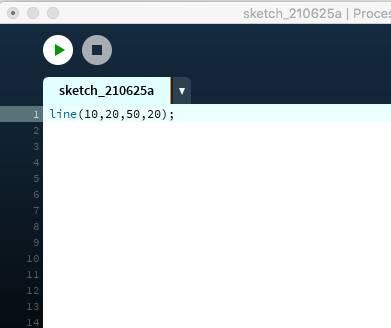
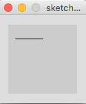

Einführung Processing
Softwareentwicklung 1
Processing
Processing = Java + "Zeichenbefehle"
Wir verwenden Processing um Java zu lernen und auf einfache Art und Weise ein grafisches Ergebnis zu erzeugen.
Fenster
Quellcode
Ausgabe
Koordinatensystem
- Achtung! Der linke obere Punkt hat die Koordinaten (0,0)!
- Die Richtung der x-Achse ist wie gewohnt.
- Die Richtung der y-Achse ist von oben nach unten.

Der erste Befehl - eine Linie


Die Werte in den runden Klammern nach dem Befehl nennt man Argumente.
Mit Argumenten übergibt man dem Befehl notwendige Informationen (z.B. wo soll die Linie gezeichnet werden?).
Weitere "Zeichen"-Befehle
Punkt (Referenz)
point(10,20);
Rechteck (Referenz)
rect(10,20,80,40);linke obere Ecke (10,20), Breite 80px, Höhe 40px

Ellipse (Referenz)
ellipse(40,70,30,60);Zentrum: (40,70), Breite: 30px, Höhe 60px

Größe Zeichenfläche
size(300, 150);
Breite = 300px, Höhe = 150px
Die Größe der Zeichenfläche wird im Programm zu Beginn gesetzt. Der Befehl kommt also vor allen Zeichenbefehlen.
Befehlsreferenz
- Mehr Informationen zu allen Processing-Befehlen findet man in der Processing-Befehlsreferenz.
- Auf der Processing Homepage
- Direkt im Menü von Processing

Konsole
- Neben dem grafischen Ausgabefenster, kann reiner Text in der Konsole ausgeben werden.
- Die Konsole wird oft benutzt, um Informationen auszugeben, die nur für den/die Programmier*in interessant sind.
Textausgabe in der Konsole
Ohne abschließenden Zeilenumbruch (Referenz)
print("Rad");
print("weg");

Mit abschließenden Zeilenumbruch (Referenz)
println("Rad");
println("weg");
Achtung! Der Text muss zwischen Anführungszeichen "" stehen!
Farben
stroke() setzt die Farbe des Umrisses (bzw. der Linie).
fill() setzt die Füllfarbe.
noStroke() und noFill() deaktiviert den Umriss bzw. die Füllung.
Die gesetzen Farben gelten immer für alle folgenden Zeichenbefehlen.
stroke(3,30,200); //blau
line(10,20,80,20);
stroke(201,75,75); //red
fill(69,167,103); //green
rect(20,30,60,60);

Farbwerte
Die drei Zahlen in den Befehlen stroke() und fill() können zwischen 0 und 255 liegen. Sie stellen die RGB (red, green, blue)-Anteile der gewünschten Farbe dar.
Tipp!Schaue in Processing, Menü: Tools | Farbauswahl nach.

(Einzeilige) Kommentare
Kommentare
// leitet ein einzeiliges Kommentar ein.
//linkes Auge
ellipse(50,50,30,30); //Pupille
ellipse(50,50,10,10); //Auge
Kommentare sollen helfen, dass man später (oder jemand anderer) den Zweck des Codes leichter versteht.
Tipps für die Übungen
- Mache dir eine Skizze mit Koordinaten, bevor du die Übungen löst. Das hilft beim Verständnis und spart im Endeffekt viel Zeit!
- Schreibe Kommentare, damit du dein Programm auch in ein paar Wochen noch verstehst.
- Verwende die Processing Befehlsreferenz!
Weitere Unterlagen
Fragen?
Wünsche?
Beschwerden?
Anregungen?